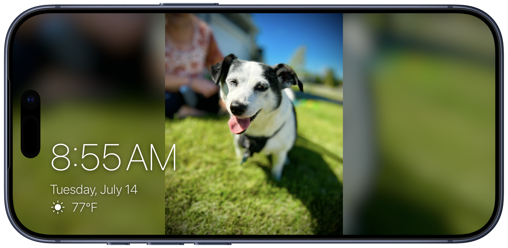
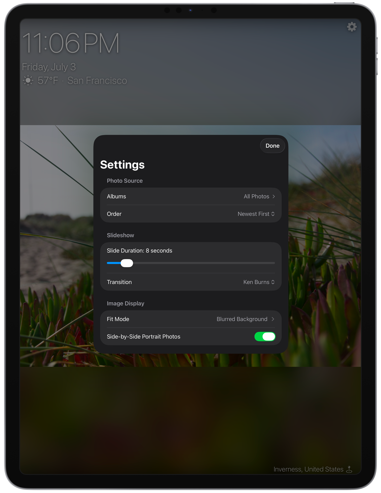
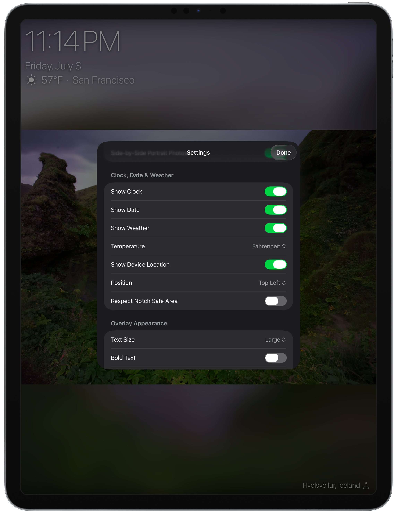
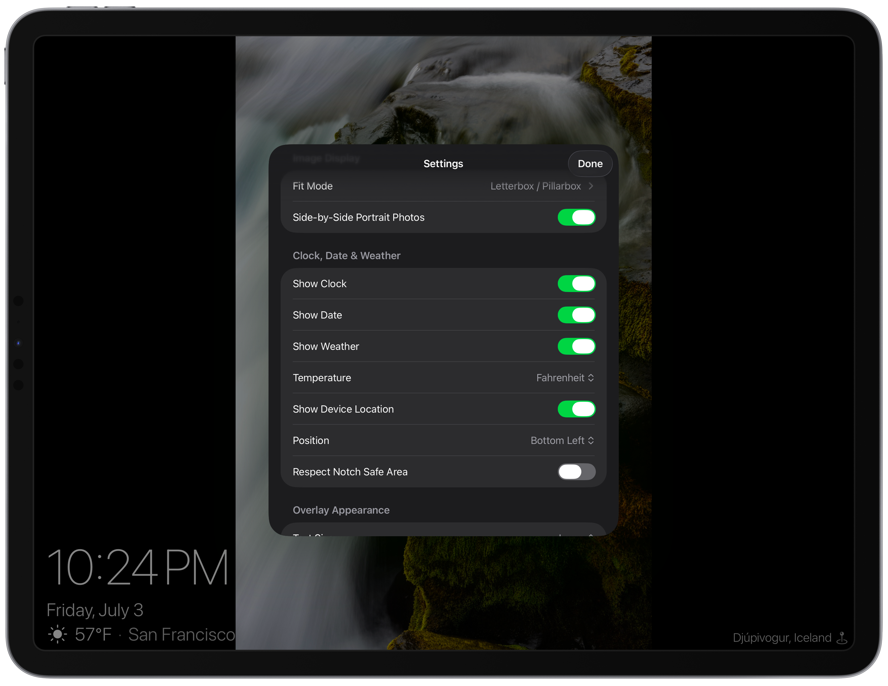
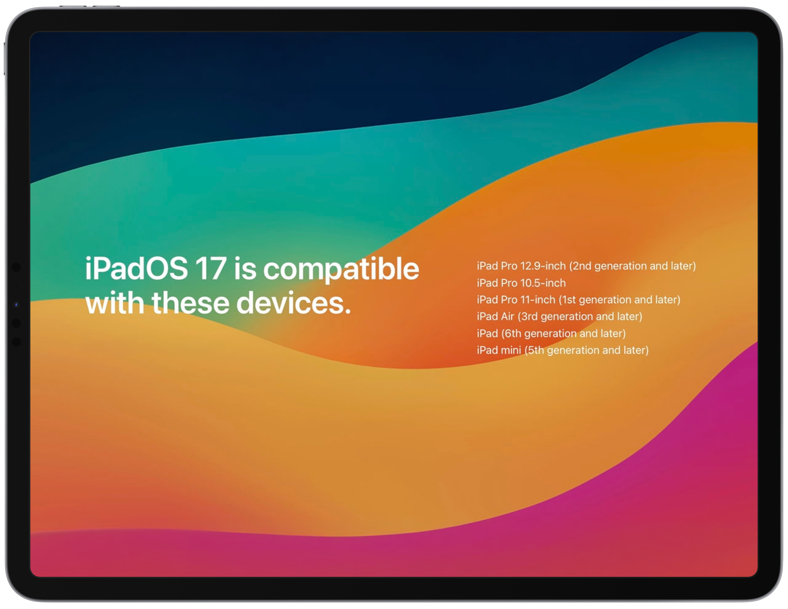
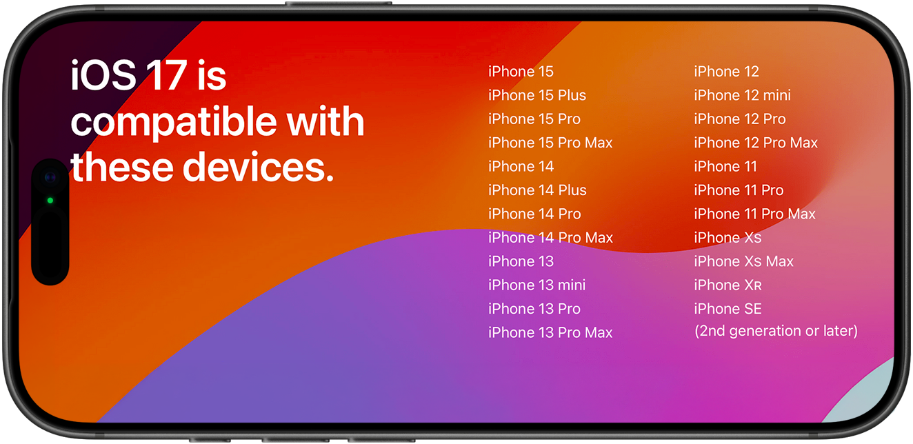

Your albums, on display
Select albums from Photos, sort the sequence, and let the iPad become a dedicated frame.
A photo frame for iPad & iPhone
Turn your old iPad or iPhone into a quiet, always-on picture frame for the albums and memories already in your Photo Library.
Choose the source, tune the slideshow, and keep time, date, weather, and photo details readable without getting in the way.

Select albums from Photos, sort the sequence, and let the iPad become a dedicated frame.
Show clock, date, weather, file name, album, and location with placement and sizing controls.
Keep the display awake, dim automatically, and reduce static overlay burn-in with drift options.
Built for the room
Ambient Album keeps the slideshow full-screen and lets the interface step aside. Settings appear over the current photo, so you can tune transitions, image fit, overlays, and display behavior without leaving the frame.


Screenshots
Settings



For iPad & iPhone
Ambient Album is specifically built for older iPadOS and iOS devices and uses your local photo library to create a focused, configurable frame experience. Ambient Album is compatible with any iPad or iPhone running iPadOS/iOS 15 or newer.

